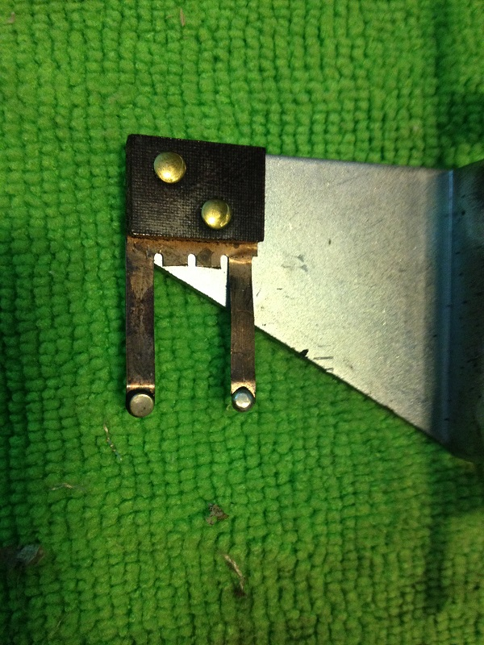
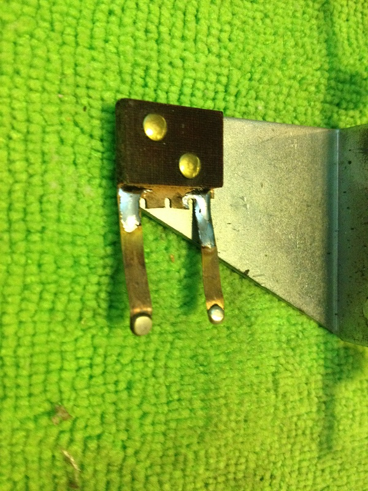
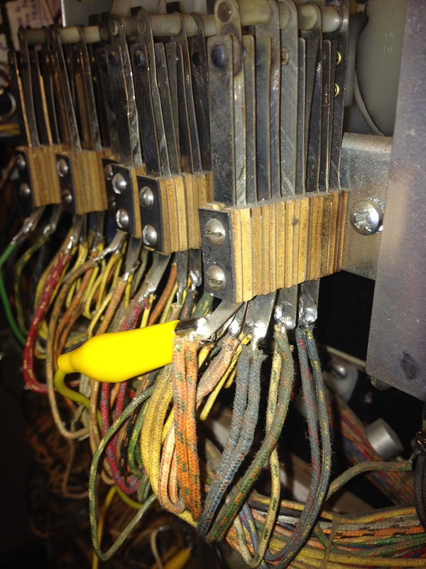
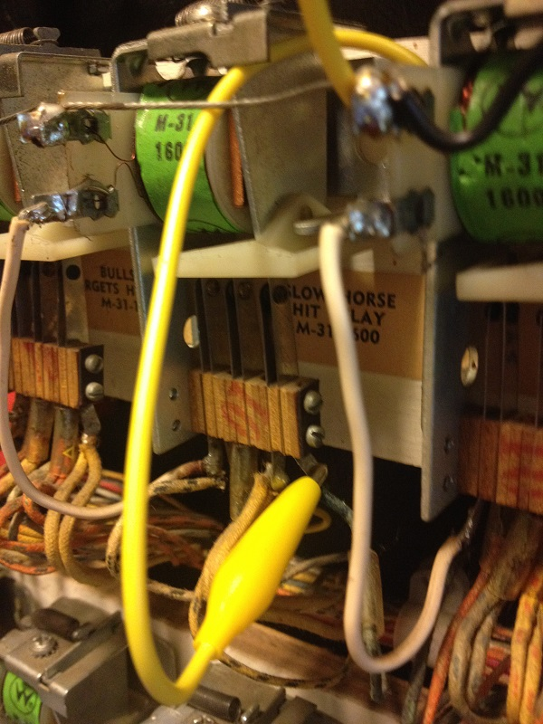

The game had two major issues that caused it to be broken, one was a score reel reset issue, simple switch adjustment. Someone had also cut all wires on the coin door. This is noteworthy because this includes the normally closed slam switch which provides 50vAC to the coin up relay to start the game. After correcting these items. The game still did not start, on further investigation the coin up relay was showing no resistance or a open circuit, someone had stabbed the coil with a screwdriver rendering it useless. Rather then buying a new coil right away, I just swapped it with the 10 cent coil and game was operating again. There were a handful of other problems which are not really worth documenting for all to read about.
Additionally I found that the game sound system wasnt working (more on that below) and the horses didnt register (more on that below) as well as the game was very dirty (more on that below) the side access panel was missing as well as the rear panel (more on that below)
My game also did not appear to ever have had the 8-track background sound hooked up, there appears to be no cut wires or bad solder jobs to indicate it was removed, I believe my game came factory with the reverb sound only and no other audio sounds, I did correct this with modern equipment below.
I also chose to upgrade the lighting in my final game, I used LED's because I never care to take this apart again, and well LED do look better in the black light environment then the incandescent. Makes it all look more natural lighting. I put "UV/Purple" 6vAC LED's in any location that had the purple paint (500 score and all front targets) I put red LED for each of the "shooter targets" they actually make a mess of the UV light on the bad guys outfits, but I dont really care much its done. I put blue in the mineshaft. This really did help the overall look of the game and I will replace incandescent with LED in the rest of my black light EM-Gun games.
My first major project was the sound, the reason this game was so cool is that it used a reverb system for real in game sound. As I mentioned my game came with no 8Track as was typical with this game. It came with what looks like a audio amp board and different color wires then the schematic has for the speaker wires.
After having some time with the amplifier board I detailed the schematic and component layout and tested all components - the board however, was not functioning, after running 60hz into the input Q3 lost the signal - since I couldn't definitively identify this transistor I basically gave up trying to fix the board since it looks like just a pre-amp/amp board. I tested with some ideas that other sites have given. For example I tested with a phono amplifier however the sound output was not very loud I also didnt enjoy keeping a phono amp in the game. I then changed my plan and simply amplified the signal using a M386 Audio Amplifier Module and made sure it had the "200 times, loop enabled" basically it puts high gain on this little circuit. you can find this module for about $7 on amazon or cheaper on ebay. (you will just search for it)
{kind=link}
image thanks to O.M.S.
So I removed the OEM amplifier board, and then hooked the M386 Audio Amplifier Module 200 Times into the explosion relay shielded wire one lead to the ground one lead to the input. Then hooked the 12v up, also pointing out the LM386 will work on 12v which is additionally why it was chosen.
So I have a signal output signal for the explosion relay, next item on the list was a simple amplifier to have speaker level amplification so I went hunting for one of those new 12V 2 CH Mini Digital Audio Power Amplifier. These things are like $10 shipped from amazon super cheap and poor quality amp but I dont need much just a little to get the signal over the noise level at higher power so the relay contacts etc dont bring it down. I mounted this to the original board with the LM386 preamp board.
After prototyping this up I put the unit into the game with external 12v and checked it all working. For the cost of a case of good beer, I restored the sound effects on the explosion relay board with new components that likely wont last as long as the old ones. However I dont need to source some random amplifier transistor that likely would have cost the same because it was end of life.
So next thing was to get rid of the prototype power supply, after replacing the old smoothing cap (mine was a 1k50v cap as shipped on the game) I then had to deal with the 14-20vDC power that would overload and kill the little SMD components on this cheap new age electronics. So back to amazon for a little $6 DROK™ Adjustable 4.0-40V to 1.25-37V 5/12V DC LM2596 Voltage Regulator (you can just google it and find on amazon or ebay) it had the fun added feature of a voltage read out, I only got this because it was super cheap and I might use these for another project so why not test them out. I took the post fuse "12v" from the post fuse and connected this and the ground to the input - I set the output to 12v and hooked up all my new components. Tested in game and now to the next step.
The original game had a 4-track loop tape, I considered recreating this on a tape player, however the cost and size of the unit wasnt worth my time, and since everything was setup to run on 12v I am not going to spend my time sourcing a 12v analog tape player. I tried a few items for this, finally landing on the cheapest and most stable an arduino. Now for the normal pinball repair person this might be out of your typical skill set and so I have provided little documentation here, you will just need to learn how to use this if you choose to replicate my rebuild. Long story short, the arduino is setup to play a WAV file of the original sound track, its setup in program to loop the data which it reads from a SD card, all of this will work on a UNO prototype board which has a voltage regulator on it so that I can simply run from 12v at a total cost of about $30 shipped this was the most expensive component - however given alternative methods that were not as stable or as effective or as obtainable I didnt bother to look further. Boot time was also a factor its about 1.5-2 seconds from powerup to audio playing which was really a important part that made me forgo other options as well.
- Used the Arduino library for asynchronous playback of PCM/WAV files direct from SD card
- Used a Stackable SD card shield
- This quick Sketch I built basically the example just cleaned up and looped for the game play.
- This modified audio file on a 1GB SDcard (modified to 8bit uncompressed 32k sample so that the cpu can play it)
Later after testing I decided to just drop the black ground wire that shorted the DC negative to the speaker negative and I just ran another wire in the game to isolate the audio from the DC power. Below you can see the red wire that is NEW that I ran and attached to the speaker black wire.. orginally this shorted the speaker ground to the DC ground of the amp circut.
And there we are I have a fully working game sound effects and sound track all play just as they should, sounding a little better and with much more volume then the original equipment could have had. Additionally the bootup time is perfect and I doubt anyone would notice a difference from the original other then the lack of 8track warble that would naturally be occurring in old tape by now.
The horses are a bit of a problem in this game, one is fast horse one is slow horse, fast horse is so fast he can blow up parts, specifically part B-7300 which is no longer available from Pinball Resource, but never fear if your game still has the finger wipes on the game you can likely save the day anyway. If you dont .. its not like its a hard part to rebuild so dont fret. The biggest advice is what to adjust and look for so that you dont have failure in the first place!
| you can
see below on the right where the fast horse finger has been stressed
and bent  |
here I
have strengthened the fingers by applying light solder to the stressed
area  |
I also want to point out appropriate way to configure the fingers. they should be "leading the fast horse" and "trailing the slow horse" the idea is that the fingers will be lined up with the target spot. As you see below the finger contacts line up with the target spot.
You can see below the slow horse the contacts trail rather then lead - and they still line up with the target spot.
Additionally I want to point out important thing in the photos above. You will see that the chain has little slack there is no play and the chain isnt touching the metal tray on the game. This is critical so that the game isnt damaging the fingers on the wipers. You adjust slack by adjusting the motor and the chain sprocket - there are 4 nuts that hold the units into place and adjust slack. I recommend adjusting and using thread lock to prevent damage in the future. You will see in the blow photo that I have a good gap on the fingers when they flip the corner, make sure to keep that spacing even on each side you need to play around with it a little to get it correct. Time spent here will save you parts and damage.

Something I wanted the game to do was to better register a hit, you cant always tell if you are making progress, only the shooter targets drop otherwise the lights just go out and you dont know if you hit the static targets etc. I wanted to change that as well for more fun competitive play. To accomplish this I wanted to use the existing bell to register a shot like some older games do. I did this with one draw back, when you press the credit/start button it will ding the bell. But with very minor and reversible modification this small side effect is acceptable.
As you see below I jumpered the bell which only rang for the slow horse hit relay as originally setup (the right photo below) with the Orange-Green on the photo on the left.
|  |  |
You will jumper the Black-Green and Orange-Yellow - you might also prevent the coin-lockout coil from energizing to save it.
Subject: Bonanza repairs
Message Body:
Hi,
It was great finding your page as I have acquired a Bonanza rifle game and am new and fixing EM games. I have no sound in mine either, the 4 track player is dead so I'll be studying your solution.
I just noticed how much slack is in my chains for the horses and in fact, one of the feelers on the fast horse is broken off and missing. Can you help me out with suggestions on how to repair that? In your page you wrote "its not like its a hard part to rebuild" so I would be greatly appreciative if you could detail how I could do that.
Thanks and look forward to any help you can provide.
_____
Hey Rick, first make sure to adjust that slack and lock tite the nuts when your done.
To fix the wipers shouldn't be hard at all, I did look everywhere and didn't find a replacement for the factory part in stock.
to rebuild this wiper I would located a old EM switch leaf - if you ever see free BINGO machines or broken pinballs or garbage EM's its handy to pick them up and strip all the valuable parts out. If you cant do that just look on the various parts websites for a wiper arm or a cheap mechanical switch and buy it to use the parts.
What you would do is just use the tip of the brass leaf switch with the contact soldered into it. using snips cut the brass switch to match about the other unit (remember you have two of these in the game and likely only one is broken, so use the other as a rough template) then when you have it matching close (you dont need to be exact close is good enough) braze it into the old broken part with good solder. then just adjust to match use the photos on this page as an example of proper alignment. I hope that helps!
-kelly